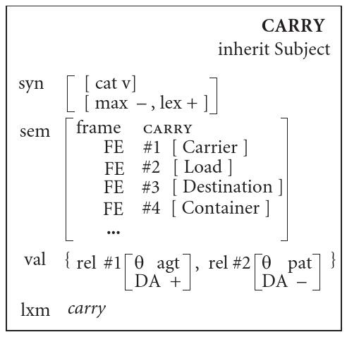

Change the first line of the description of a or
b by <x 2> and unification fails.
Let us try to model agreement between the determiner and the noun via
unification. We partially specify the lexical constructions of “the”,
“book”, “snow”, and “much”, focusing on the semantic features relevant
for agreement: the configuration cnfg (whether it is a mass
noun or a count noun) and the number num (singular or
plural). We obtain something like:
- “much”:
<sem cnfg> = mass, <sem num> = sg, ...,
- “the”:
<sem cnfg> = [], <sem num> = [], ...,
- “snow”:
<sem cnfg> = mass, <sem num> = sg, ...,
- “book”:
<sem cnfg> = count, <sem num> = sg, ...,
In order to impose constraints on possible combinations of
determiners and nouns, we want to create a phrase-structure construction
that we would call the determination construction. If
d1 and d2 are constructions corresponding to the words
to combine, we would require that
<d1 sem cnfg> = <d2 sem cnfg> (and similarly
for the number attribute num). This is implemented using
unification. We would like to state that the noun phrase is grammatical
if and only if unification of d1 with d2 succeeds. If
it succeeds, the words can combine and the resulting unified AVM can be
used to determine how the noun phrase behave. In our example, the AVMs
of “much” and “snow” can unify, since they are both labeled as
cnfg mass. “The” combines with both “snow” and “book”
because its cnfg feature is a variable: it is left
unspecified and can unify with any value. However, this is not the case
for “much” and “book”, which have incompatible cnfg
feature.
The determination construction uses unification as outlined
to ensure the agreement between its two children constituents. The
agreement and other matching constraints make up the internal
properties of the construction. In the determination construction of
Fried and
Östman (2004b), these internal properties are represented in the
bottom boxes:
The internal properties are not associated with any attribute (they
just float in the outermost box). So we see that this type of
construction is not represented by a simple AVM like lexical
constructions. Formally, this can be seen as an AVM with two special
features (M. Kay 1984;
Shieber 2003, p33):
- a constituent set, a set containing the daughters of the
phrase,
- a pattern, a list specifying the order of realization of
the daughter of the phrase (the actual order in which they are
said).
For now, let us think of these boxes as defining the pattern, and the
constituent set is just the set of elements in the pattern. One lexical
construction can unify with the sibling on the left, and another with
the one on the right.
Let’s examine the internal properties of the construction in more
details. The #i syntax indicates coindexation,
i.e. boxes prefixed with the same index \(i\) denote identical AVMs. In programming
terms, two AVMs that are coindexed share a single location in memory. In
this construction, coindexes represent the constraints that the semantic
attributes cnfg, num and bounded
must coincide in the two constituents. Besides these agreement
constraints, we also see that one of the constituent is a determiner and
the other is the head, and there are various syntactic constraints on
the head. For instance, it cannot be a proper noun as we usually don’t
say “the New York City”. Actually, in some cases this is possible, and
this can be specified elegantly in the grammar (Fried and Östman
2004b).
By the way, coindexation is the reason for another representation of
AVMs as directed acyclic graphs, where AVMs are nodes and attributes are
edges. In this graphical representation, AVMs which share an index are a
single node with several ingoing edges. This representation is important
because it is used to implement unification (Jurafsky and Martin 2009, sec.
15.4), but we don’t need to discuss it further here.
If the constituent set contains the internal properties of the
construction, what are the external properties of the
construction? They are the features that are necessary to embed this
construction, i.e. unify it with a larger phrase-structure construction
as a constituent. Many internal features will be irrelevant to specify
whether or not unification is possible. External features, on the other
hand, should contain all the information about the phrase as a whole to
specify with what it can combine, as a constituent of a larger whole.
Some internal properties are resurfaced and passed upwards. Typically,
the properties of the head are the most important – in particular, this
is coherent with the traditional definition of the head word of a
constituent as the word that defines the syntactic category of the
constituent. Here, the cnfg and num values are
the same as in the daughter constituents. Perhaps some verb’s (lexical)
construction specifies that its object can only be a NP with a mass noun
head, so these external properties might be useful. Moreover, we see
that the bounded attribute is set to +
regardless of whether the constituents are bounded or not. So not all
external properties are simply internal properties passed upwards; some
external properties are fixed.
Details on boundedness and the frame attribute.
According to Wikipedia
on boundedness, here is how to think about the bounded
attribute. If we remove 90% of the quantity of snow somewhere, we can
still say the rest is “snow” and hence, snow is bounded -.
But if we remove 90% of a quantity of “much snow”, it can be too little
snow to be called “much snow” anymore. In that sense, the determination
construction only characterize bounded referents.
The frame attribute is treated very abstractly by Fried and Östman
(2004b), so I ignored it along with the special syntax
↓ and ↑. They say:
the semantic characterization of the construction must include
information about integrating the frames of its constituents. To our
knowledge, the representation of this relationship has not been worked
out in any detail yet.
Phrase-structure constructions can also be represented as i) a
context-free rule and ii) equations (Shieber 2003). The
equations either encode constraints on the daughter constituents
(internal features) or specify external features. Here is the
determination construction in this notation, where the
syntactic features are omitted for conciseness:
X0 → X1 X2 # context-free rule
# internal features (constraints on RHS)
<X1 role> = det
<X2 role> = head
# internal features: matching constraints
<X2 sem cnfg> = <X1 sem cnfg>
<X2 sem num> = <X1 sem num>
<X2 sem bounded> = <X1 sem bounded>
# external features (of LHS)
<X0 sem cnfg> = <X1 sem cnfg>
<X0 sem num> = <X1 sem num>
<X0 sem bounded> = <X1 sem bounded>
# end external features
In this case, the special feature specifying word order,
pattern, is a list where X1 is the first
element and X2 the second.
Linking constructions
We now come to the question of representation of verbs and linking. I
think this is the really interesting and elegant part. A major question
is how to account for alternations, that is, the fact that a
single verb occurs in different syntactic context. This was the question
that worried us in the motivation section. Consider the following
alternations (P. Kay and Fillmore 1999):
- Sidney gave some candy to Marion. (transitive, caused motion)
- Sidney gave Marion some candy. (transitive, ditransitive)
- Marion was given some candy (by Sidney). (passive,
ditransitive)
- Some candy was given to Marion (by Sidney). (passive, caused
motion)
First of all, do we have to have four different lexical constructions
to license these sentences? No, thanks to a mechanism called
inheritance. We specify a general construction with which many,
more specific AVMs will be unified. Here, we can have a single
construction for “give” which doesn’t specify a lexeme
(let’s call it the main construction), and then all the variants
(“give”, “gives”, “given”, “gave”, etc.) inherit from the main
construction while specifying a few additional attributes like
lexeme, person, number,
mood. Then, these more specific variants of constructions
can unify with two constructions: either the transitive or the
passive construction, and either the caused motion or the recipient
constructions.
Inheritance is pervasive in CxG, because it allows linguists to
express very general principles that hold in many “places” in the
grammar without repetition. Most constructions, then, get their content
by inheritance. This also allows more idiomatic constructions, which
simply do not inherit certain widespread constructions. In English,
there is a Subject construction from which all other verbs’
lexical constructions must inherit. This implements the requirement that
all English sentences must have a subject.
Let’s turn to lexical constructions for verbs and look at the
Subject construction and the carry construction (Fried and
Östman 2004b):

The carry construction introduces a valence
(val) attribute. It is assigned a set of AVMs which each
have a rel attribute. The function of val is
to map some frame elements to θ-roles. This is the
glue between the semantics and the syntax. Frame elements are
entities fulfilling a certain role in the relation described by the
verb. Here, the carry frame has 4 frame
elements: Carrier, Load, Destination, Container. Similarly, the buy/sell frame
would have 4 frame elements: Buyer, Seller, Goods and Money.
θ-roles are generalizations of the frame elements. For example,
both the Buyer of the verb “buy”, the Carrier of the verb “carry” and
the Builder of the verb “build” are associated with the agent
θ-role. Indeed, they share many properties: in general, they are
volitionally involved in the action, aware of it, etc.
The valence only specifies particular salient frame elements which
need to be expressed. For instance, in the carry construction
above, the valence specifies that the Carrier and the Load are
specified, which explains the common “She carried an oversized backpack”
while forbidding “I carry”. Other frame elements are optionally
expressed when the verb’s construction unifies with another construction
that contributes valence. An example is given in the next
subsection.
Here we need to take a detour and talk about how unification on sets
work, in order to explain how verb constructions unify with
constructions of their arguments. I haven’t figured out how it works
exactly, so this should be taken with a large grain of salt. Please get
in touch if you have any remarks. So here is my guess. In set
unification, all the elements of the smallest set (or equal-sized set)
try to unify with elements of the other set. If there is only one
possible pairing, i.e. each element of the smallest set can unify with
one and only one element of other set, we’re good and nothing special
happens. But there are two other possibilities:
- An element can unify with several elements from the other
set. Then, it seems that we need to entertain several parallel options
until unification with another construction resolves the ambiguity. In
that sense, unification between 2 sets is not an operator (a function
that yields a unique set) anymore.
- An element cannot unify with any
elements from the other set. Then, the element is added to the set (like
a regular set union).
With this in mind, let’s go back to carry and
Subject. The Subject construction asserts that one of
the elements of the valence will play the grammatical function
(gf) of subject. However, the inheritance of carry
from Subject does not specify whether the 1st or the 2nd
element of the valence is the subject (case 1). The ambiguity is
resolved once carry unify with one of these two
constructions:
- When carry is unified with Transitive Object, the
non-distinguished argument (
DA -) #2 is assigned the object
(obj) function. This solves the ambiguity that we had with
the inheritance from Subject: now, we know that the other
argument #1, which does not have an attribute gf, must have
the subject function.
- When carry is unified with Passive, the
distinguished argument #1 is assigned the oblique function. It is only
optionally realized, meaning that even if it is present in the
linguistic analysis, it is invisible or omitted in the actual resulting
phrase. This is indicated by
(fni). When it is realized, it
is a prepositional phrase with the preposition “by”. By inheritance from
Subject, this implies that the argument #1, which does not have
any function gf, must be the subject.
By the way, the DA attribute’s sole purpose seems to be
to identify the argument that can be the subject in the active mood. It
is a rather simple, but useful abstraction: we can still use the
Passive construction and the subject is not the
DA + anymore.
Increasing the valence
I mentioned above that constructions can increase valence. This will
explain how the ditransitive construction can be applied to verbs like
“slice” as we have seen in the motivation section. Fried and Östman
(2004b) gives the following example of verbs usually considered
intransitive that are used with a direct object:
She’ll walk you cross the street
Now we’re talking money!
It seems that to increase the valence of walk, we need to
have a construction that specifies a valence element which cannot unify
with any valence element of the walk construction (as I’ve
hypothesized in bullet point 2). For
example, consider the Affected Object construction:
It inherits from the Transitive Object construction. It adds
i) a semantic constraint on the interpretation of the entire sentence
and ii) specify the θ-role of the sole valence element. Since the single
element of the two valence sets of Affected Object and
Transitive Object are compatible, they unify (the semantics,
omitted here, must match, too). However, since the construction of
intransitive verbs like “walk” specify that the θ-role of their sole
argument is not a patient, by bullet point
2, the valence set now contains 2 elements. This additional valence
element licenses “you” in “She’ll walk you cross the street”.
Still, I’m not sure what prevents Transitive Object from
unifying with walk directly. We would probably need two
additional ingredients. First, an English-specific, grammar-wide rule
that states that any valence element must specify a θ-role (see details
in the details box below). Second, we would also probably need θ-roles
to be mutually exclusive.
One option for mandatory θ-roles
Shieber
(2003) surveys different formalisms that extend the simplest form
of unification-based grammar. Martin Kay’s Functional Unification
Grammar has a special value ANY, which behaves like the
variable [], except that a construction containing
ANY values is not “well-formed” and must be unified further
in order to license a sentence. So if the Transitive Object
uses θ ANY, it can unify with the walk
construction but the resulting construction is not well-formed. On the
other hand, the Affected Object construction can unify with the
walk construction fine and is well-formed.
Shieber
(2003) warns us against the use of such devices, which breaks
declarativeness/non-procedurality of the formalism (see below).
Ordering constructions
Lexical constructions, including verb constructions, do not have
internal properties or daughter constituents. Neither do linking
constructions like Passive or Transitive Object.
That’s why they need to be unified with larger constructions such as the
Verb Phrase construction.
We don’t need to go into details here, as we’ve seen all the
important mechanisms of CxG. This construction has a verb constituent
which appears first, followed by a variable number of arguments. These
arguments are co-indexed with the valence specified by the verb’s
construction. Co-indexation somehow prevents the subject element in the
valence from appearing as an argument.
Keeping the subject out of the verb phrase: more set unification tricks
How the subject is prevented from being realized as an argument in
the verb phrase is not so clear. They list the valence of the Verb
Phrase construction (figure 26) as
↓2 {[rel [gf sub]], #1 []+}, where ↓2 is a
coindex of the valence of the verb, + indicates “one or
more”.
Perhaps we can require that there is only a single element in the
valence that can have rel = [gf sub]. I hypothesized above
that we would also need such a mechanism to have mutually exclusive
θ-roles. Then, this notation specifies that the coindexed elements are
not that element with gf sub.
In fact, phrase-structure constructions are supposed to only define
the hierarchy between constituents (via the constituent set). But in
general, they do not need to specify how these constituents are linearly
ordered in the sentence (via the pattern attribute); this is the job of
ordering constructions. In English, phrase-structure constructions such
as determination or Verb Phrase play both roles. On
the other hand, in languages where word order is said to be more free,
word order often carry discourse/pragmatic information. CxG is a good
tool to describe this constraints, as AVM features can be of any nature.
Fried and
Östman (2004b) shows a Basic Clause Structure ordering
construction for Hungarian which relies on discourse and phonological
features. We can also read Lambrecht (2004)’s study
of the “C’est X comme Y” construction in Spoken French for a detailed
example.
At this point, we’re ready to define what a grammatical sentence is:
it is a sentence which can be constructed as the result of the
unification of a set of lexical, phrase-structure and ordering
constructions. More precisely, the unification of the constructions
specifies the order of its constituents via the pattern attribute, and
these constituents themselves either possess a lexeme
property or a pattern attribute specifying order of sub-constituents.
The sentence is the recursive concatenation of these nested
lexeme values.
Summary
- The grammar of a language is a set of constructions. There are
several types of constructions.
- Lexical constructions only have external properties.
- Verb constructions are lexical constructions that are special
because they have a valence set that specifies a minimal argument
structure.
- Phrase-structure constructions specify a hierarchy via their
constituent sets, but not necessarily their order.
- Ordering construction specify the order in which the constituent
phrases appear (the pattern). In English, most/all phrase-structure
constructions also specify an order but in other languages, the order
can depend on discourse/pragmatics (“information structure”).
- Unification is an operation on constructions. It is relatively
simple when we work with AVMs but messier when values can be sets.
- A sentence is grammatical iff there is a subset of constructions
which can be unified, such that the
pattern and
lexeme values spell out the words of the sentence in the
correct order.
Comparison with
context-free grammars
As we have seen, a phrase-structure construction or an ordering
construction can be written as a context-free rule and some equations.
This notation can be helpful to understand better how constructions
differ from context-free rules alone. The equations specify two
different things:
- constraints on the daughter constituents (internal properties, in
the box representation)
- attributes of the constituent as a whole (external properties, in
the box representation)
It might seem that this notation emphasizes the top-down generation
process. Starting from the S non-terminal, the
non-terminals are rewritten by replacing the LHS with the RHS of rules,
until all the non-terminals have been replaced by a string of
terminals.
But it should not obscure an important characteristic of
unification-based grammars: the order of the application of the rules
does not matter. Consider the sentence “John loves Mary” and its
structure [NP [V NP]]. In context-free grammars, this is
generated by applying the rule S → NP VP, then
VP → V NP. But we cannot generate first V NP
using the 2nd rule, then somehow identify this with the VP
in the LHS of the first rule without parsing again. Nothing
indicates that V NP is a constituent (a whole) that can be
generated by a single non-terminal; In other words V and
NP are not grouped in a single entity and do not carry
external features. With construction grammar, and more generally,
unification-based grammar, the information is not lost and we can
generate in any direction:
- top-down: a VP construction unifies with V and NP constructions if
the external properties of the V and NP match, as specified by
the internal properties of the VP.
- bottom-up: a VP construction unifies with a S construction and a NP
construction if the external properties of the VP and the NP
match, as specified by the internal properties of the S.
We can create the final construction (that licenses a sentence) by
applying rules in any order. This order-independence is what Shieber
(2003) calls non-procedurality or
declarativeness, but I don’t understand how it comes about
exactly yet. For instance, Shieber (2003) warns us
that various extensions of unification-based grammar threatens
declarativeness, such as ANY values (that I’ve discussed in
details boxes). However, I don’t see a way for ANY values
to be present in the result of a unification with one order, but absent
when we unify in another order.
No atomic non-terminals
Context-free grammars are also inelegant in that non-terminals are
atomic symbols, i.e. they lack internal features. Take verb phrases, for
example, and consider that verbs take a different number and different
types of arguments (subcategorization). In CxG, the lexical construction
specifies a minimal argument structure in a rather fine-grained way.
Each such unique argument structure corresponds to a
distinct verb phrase non-terminal in a context-free grammar.
That’s a lot of non-terminals.
Since they’re atomic, these non-terminal do not encode any
information about argument structure themselves. Only the rules tell us
what they can generate.
Unification-based
grammars are more powerful than context-free grammars
Shieber
(1985) shows that natural languages are generally not
context-free. He exhibits syntactic structures (cross-serial
dependencies) from Swiss-German that cannot be produced by a
context-free grammar. However, it is easy to imagine how these
structures can be handled in the construction grammar framework. We can
create a phrase-structure and ordering construction that would match the
arguments and the verbs in the correct order.
Construction grammar (and unification-based grammars) are more
powerful than context-free grammars. But I don’t know if
unification-based grammars (without extensions like ANY)
are equivalent to context-sensitive grammars, or some restricted subset
of it.
Conclusion
I’ve tried to convince you that constructions are very frequent and
pose challenges to bottom-up semantics. By seeing everything as a
construction and using a simple mechanism to combine constructions,
unification, one can describe complex linguistic phenomena elegantly and
more or less formally. Moreover, constructionist approaches are
appealing to cognitive scientists and AI researchers, because they try
to account for language acquisition and place linguistic skills among
more general cognitive skills.
In order to learn more about constructions, a fascinating follow-up
read would be Lakoff (1987)’s “Women, fire, and
dangerous things”. While Lakoff has pretty much the same definition of
constructions as pairings of meaning and form, he goes much further in
explaining why constructions are the way they are. In short, he
argues that constructions can be in large part predicted (“motivated”)
given i) a semantic description (“idealized cognitive models”) along
with ii) general “central principles” that relate meaning and form
within a language. In that sense, a construction is a “cognitively
efficient way to express” meaning. Then, constructions are not (only?)
related via inheritance in the space of constructions, but via
metaphoric and metonymic mapping in semantic space. I would like to
summarize that in the future.
I also hope to read and perhaps comment Goldberg (2006)’s second
book, which deals with learning and generalization.
Appendix
Bottom-up semantics and
constructions
How can we reconcile bottom-up computation of meaning and seemingly
non-compositional phenomena that are explained via constructions?
Let us start with formal semantics. If we do not modify the
composition operator (function composition), in order to change the
semantics of phrases of multiple words, we have to change the meaning of
individual words. We could associate each verb with several meaning
functions, each taking a different number of arguments, and each of
these arguments could also have different syntactic types (noun phrase,
prepositional phrase, adjective phrase).
The different senses of the verbs in different constructions are
still very close to each other, and naively duplicating the meaning
functions and only “changing some minor aspect” in the resulting
function would not capture these similarities. Instead, we could create
a function that derives the specific meaning function from a basic (say,
the “transitive”) meaning function. This would be in-line with the
general spirit of formal semantics, heavily relying on lambda-calculus.
For example, one could imagine a function \(f_{\mathrm{caused-motion}}\) and apply it
to the generic meaning \(m_{\mathrm{sliced}}\) to derive the
“caused-motion meaning of the verb sliced”.
Still, this would be a constructionist solution, in that specific
constructions would get dedicated representations as functions. It would
also be projectionist, in that meaning is completely encoded in the
lexicon. I guess this is one way in which, as Levin notes,
both approaches converge.
There are still important problems.
- Since there are several possible constructions per verb, to analyze
a given sentence, how do we choose which function should be applied? We
could start different semantic analysis of the sentence in parallel
(bottom-up) by applying the different functions. As soon as there is a
mismatch in the number of arguments or the syntactic category of the
arguments, a given interpretation stops being considered and is pruned.
But note that this would not be enough to distinguish the “way
construction” from the “caused motion”, which both have an additional NP
argument compared to the “transitive”.
- Constructions such as the “caused motion” are very
productive. It seems that we can’t really list all the verbs
that can be used in this sense.
- There are constructions that lack verbs (Goldberg cites examples
from French, Russian, German).
- It is probably not great to consider that the transitive
construction is neutral. Indeed, we can use intransitive verbs such as
“walk” within the transitive construction, so it cannot really be
neutral.
Let us directly turn to the connectionist approaches. We can naively
assume that the vector of a given verb encodes whether or not the verb
can enter the construction. Then, the composition operator \(f\) could vary slightly its outputs to
incorporate the additional meanings contributed by the constructions.
Does the connectionist approach suffer from the problems above?
Point 2) indicates that whether a verb can enter a construction or
not must be a matter of generalisation, since we don’t see all the
possible verb/construction pairs during language acquisition. Then we
hope that whether a verb can enter a certain construction is
computed by a certain function of syntactic and semantic
features. (This probably also solves 1) at once.)
Again, this is in some way a constructionist solution: for each
construction, we can try to find within our neural network \(f\) (via some sort of probing, for example)
a subnetwork that predicts, for any verb vector, whether this vector
potentially participate in a certain construction. This relies on the
existence of constructions.
References
Chomsky, Noam. 1957. “Syntactic Structures.”
Fried, Mirjam, and Jan-Ola Östman. 2004a. Construction Grammar in a
Cross-Language Perspective. Vol. 2. John Benjamins Publishing.
———. 2004b. “Construction Grammar: A
Thumbnail Sketch.” Construction Grammar in a Cross-Language
Perspective, 11–86.
Goldberg, Adele E. 1995. Constructions: A Construction
Grammar Approach to Argument Structure. University of Chicago
Press.
———. 2006. Constructions at Work: The Nature of
Generalization in Language. Oxford University Press on Demand.
Jurafsky, Daniel, and James H Martin. 2009. “Speech and
Language Processing.”
Kay, Martin. 1984.
“Functional Unification
Grammar: A Formalism for
Machine Translation.” In
10th
International Conference on
Computational Linguistics and 22nd
Annual Meeting of the Association
for Computational Linguistics, 75–78.
Stanford, California, USA: Association for Computational Linguistics.
https://doi.org/10.3115/980491.980509.
Kay, Paul, and Charles J Fillmore. 1999. “Grammatical
Constructions and Linguistic
Generalizations: The What’s
X Doing Y?
Construction.” Language, 1–33.
Lakoff, George. 1987. “Women, Fire, and
Dangerous Things. What
Categories Reveal about the
Mind.” University of Chicago Press.
Lambrecht, Knud. 2004. “On the Interaction of Information
Structure and Formal Structure in Constructions: The Case
of French Right-Detached Comme-N.” In
Construction Grammar in a Cross-Language
Perspective, 157–99. John Benjamins.
Maillard, Jean, Stephen Clark, and Dani Yogatama. 2019. “Jointly
Learning Sentence Embeddings and Syntax with Unsupervised
Tree-Lstms.” Natural Language Engineering 25 (4):
433–49.
Pollack, Jordan B. 1990. “Recursive Distributed
Representations.” Artificial Intelligence 46 (1-2):
77–105.
Shieber, Stuart M. 1985. “Evidence Against the Context-Freeness of
Natural Language.” In Philosophy, Language, and Artificial
Intelligence, 79–89. Springer.
———. 2003. An Introduction to Unification-Based Approaches to
Grammar. Microtome Publishing.
Vaswani, Ashish, Noam Shazeer, Niki Parmar, Jakob Uszkoreit, Llion
Jones, Aidan N Gomez, Łukasz Kaiser, and Illia Polosukhin. 2017.
“Attention Is All You Need.” In
Advances in Neural Information
Processing Systems 30, edited by I.
Guyon, U. V. Luxburg, S. Bengio, H. Wallach, R. Fergus, S. Vishwanathan,
and R. Garnett, 5998–6008. Curran Associates, Inc.
http://papers.nips.cc/paper/7181-attention-is-all-you-need.pdf.
Winter, Yoad. 2016. Elements of Formal Semantics: An
Introduction to the Mathematical Theory of Meaning in Natural
Language. Edinburgh University Press.